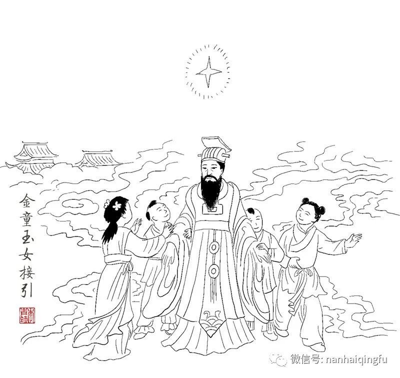
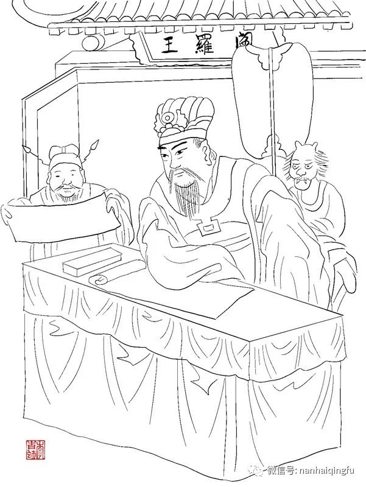
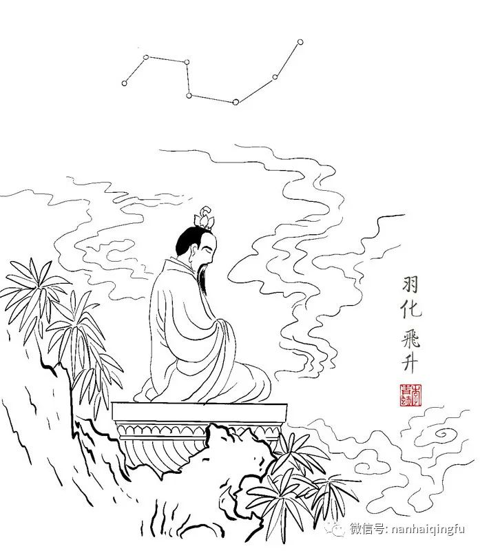
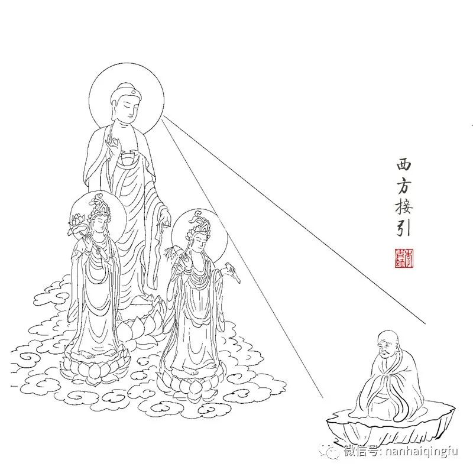
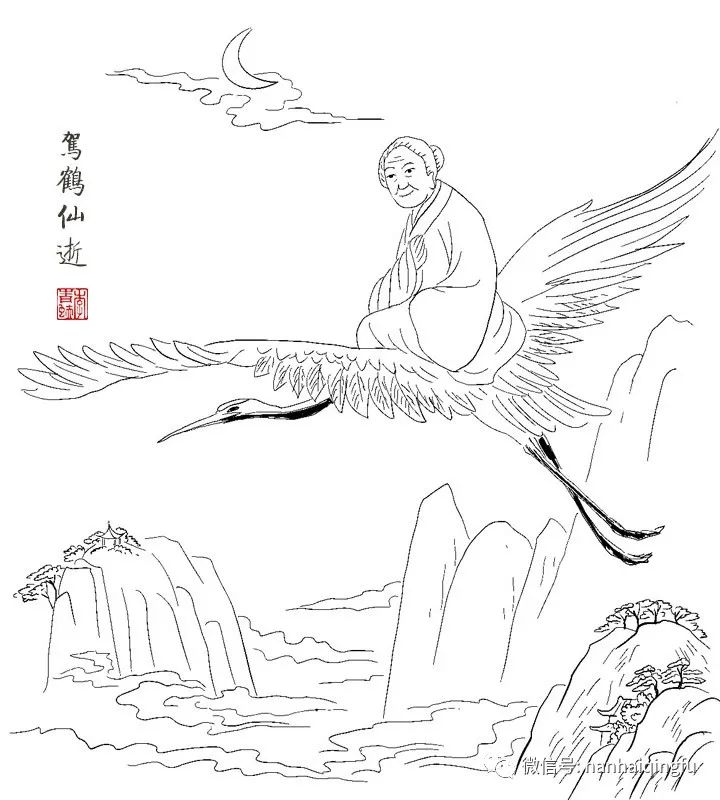

不同人逝世后都去了哪里？
原创 李青蚨 南海青蚨 2022-12-03 08:58 发表于浙江
原文链接(长) 原文链接(短)
闲聊一些，在这个和平年代，人依然存在阶级，这是永远不可改变的事实。即便表面说没有了阶级，可人的精神境界依然是有阶级划分的。
几千年以来，多少帝王将相，平明百姓，他们去世后都去了哪里呢，我就来聊一聊。
**一：帝王**
帝王里也分很多种，他们去世叫殡天或者驾崩。先说开国皇帝，这一类帝王是领天命而来，原先是天上紫薇星辅佐下凡，殡天后紫薇星归位，三魂七魄则由天神接引回归天上，封个职位。例如汉高祖刘邦，汉世祖刘秀，唐太宗李世民，明太祖朱元璋，都是紫薇星下凡。
再说继位皇帝，这一类君王殡天后要看他生前的功绩。做的好的有金童玉女接引上天任职。无用君主也是由金童玉女接引送往六道轮回直接投胎。不管怎样都属于天子，有天命在身，地府的鬼差是不可以接引的。
还有一种是末代皇帝，也是领天命下凡来结束这个朝代的，这是职责所在，殡天后由天将接引回去任职或者复职。一个国家的衰落，不仅仅是一个帝王的昏庸，更主要的也是朝堂之上文武百官的无能。很多的东西在一起才会促成一个衰落的结局。

**二：将相官员**
帝王身边的仁臣是天上星宿下凡，他们也都是领了天命的。他们去世叫薨逝，薨逝后由天将接引归位。我们最熟悉的文臣，包拯，文天祥，都是由文曲星下凡辅佐帝王。这里面最特殊的是包青天，他薨逝以后文曲星的元神归位，而身上的三魂七魄则下地府封了阎罗王，可见其地位真的不一般了。东方朔和狄仁杰是太白金星转世投胎，有意思的是狄仁杰薨逝后第二年，太白金星又转世成了大诗人李白，也不知道为啥。
普通官员本身就是普通人，去世叫逝，逝世后都会去地府分配。奸臣就不一样了，十恶不赦的会下十八层地狱，再送畜生道，下辈子投胎为动物。据说奸臣赵高死后就投胎做了乌龟，被大石头压了三百年。魏忠贤死后投胎做了蜈蚣，又修炼一百年后被雷劫劈死灰飞烟灭。武则天手下有个库吏名叫来俊臣，死后被地府请下去，念其著作《罗织经》有功，地府也就让他亲身体验了一把《罗织经》里的所有内容……

**三：出家人**
道家和佛家各不同。先说道家，道家真人去世后叫羽化或者飞升，分不同种类，修行极高者羽化后灵魂超脱三界之外，不再入六道轮回之苦。有的真人在飞升后会有神职，因其生前行善积德有功，由天仙接引封其神位。

佛家高僧去世叫圆寂，很多得道高僧都是坐着去世的，也叫坐化。圆寂后的高僧由西方三圣接引，去往西方极乐世界，跳出三界之外，不受六道之苦。
还有一些恶道恶僧死后就会下十八层地狱受苦，因为其生前借用宗教名义行恶事，会比一般的坏人受到的惩罚更多。

**四：普通人**
普通人也按照好坏分配，生前坏事做尽的下十八层地狱。生前做尽好事，一生行善的都会寿终正寝，最后由仙鹤接引去往极乐世界，福泽子孙，但这种人很少。

普通老百姓呢，其实就是你我这样的人，跟人吵架打架也有过，小时候也曾偷偷摸摸干过坏事，长大又有了人的七情六欲，思想上时而想做点坏事，时而想做好事，这样的其实就是你我这些普通人，所以不用担心，你我都只是走黄泉路进阴曹地府，按章程分配，不会下地狱的。
什么样的才会下地狱？害人杀人的就不说了。有那些残害动物的，人说杀生而不虐生，虐待动物致死的会下地狱。你正常吃鸡鸭鹅这些没什么，就是奔着吃它的，但不要虐杀。你看那些杀猪宰羊的屠夫，命里就有杀生令，都是直接给动物来个痛快，不会去虐待。而有的烂人，看到猫猫狗狗的，非要虐待整死它们，这种人就会下地狱。
还有的人手上没沾血，可嘴上沾血，就是用那张贱嘴害人，挑拨是非，间接导致别人死亡的。比如现在网上有些人敲键盘骂人，在没了解事情原委的情况下就叫这个去死，叫那个去死的，这种人也是要下地狱的。
另外像坑蒙拐骗的，包庇霸凌的，仗势欺人的，诸如此类，都会下地狱。你看看你有没有占过这些，没占过就没事哈哈。
这就今天的内容哦，希望您各位继续喜欢点赞哦，谢谢。
我知道我文字编排能力不行，经常错别字和语病，不过我已经尽全力写了，还花时间画插图丰富文章。可是有的人也不用私信骂我吧😂，白嫖也就算了，还要挨你一顿骂，I 服了you。